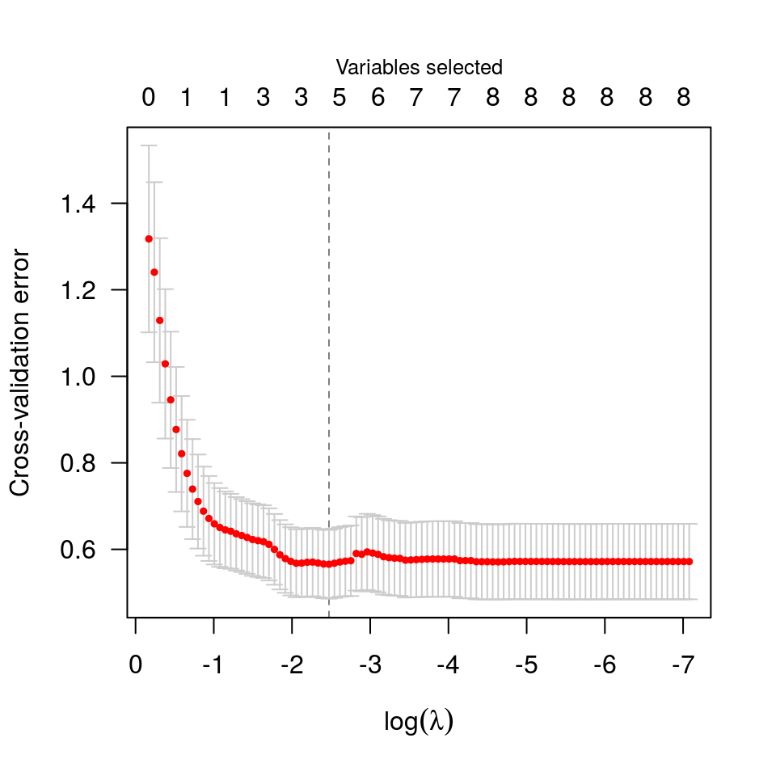
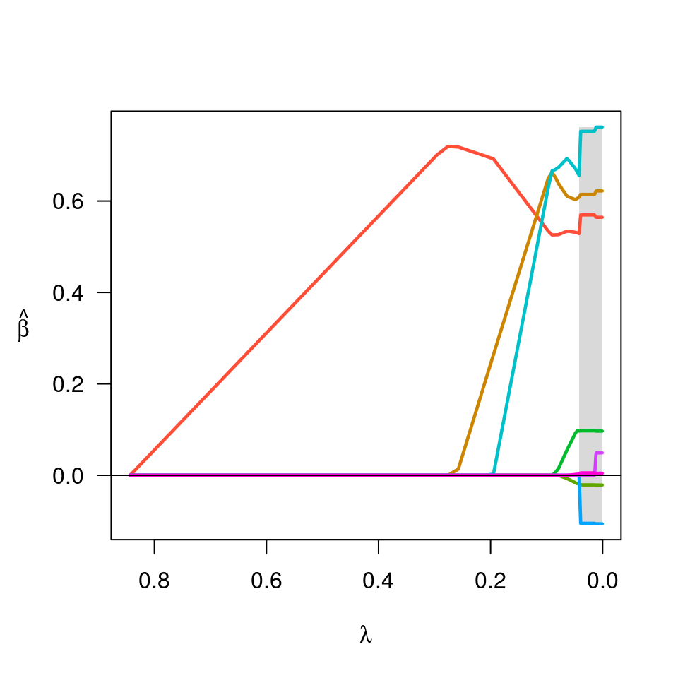

cv.ncvreg.RdPerforms k-fold cross validation for MCP- or SCAD-penalized regression models over a grid of values for the regularization parameter lambda.
cv.ncvreg(X, y, ..., cluster, nfolds=10, seed, fold, returnY=FALSE, trace=FALSE)
| X | The design matrix, without an intercept, as in
|
|---|---|
| y | The response vector, as in |
| ... | Additional arguments to |
| cluster |
|
| nfolds | The number of cross-validation folds. Default is 10. |
| fold | Which fold each observation belongs to. By default the
observations are randomly assigned by |
| seed | You may set the seed of the random number generator in order to obtain reproducible results. |
| returnY | Should |
| trace | If set to TRUE, cv.ncvreg will inform the user of its progress by announcing the beginning of each CV fold. Default is FALSE. |
The function calls ncvreg nfolds times, each time
leaving out 1/nfolds of the data. The cross-validation
error is based on the residual sum of squares when
family="gaussian" and the binomial deviance when
family="binomial" or family="poisson".
For family="binomial" models, the cross-validation fold
assignments are balanced across the 0/1 outcomes, so that each fold
has the same proportion of 0/1 outcomes (or as close to the same
proportion as it is possible to achieve if cases do not divide
evenly).
An object with S3 class "cv.ncvreg" containing:
The error for each value of lambda, averaged
across the cross-validation folds.
The estimated standard error associated with each value of
for cve.
The sequence of regularization parameter values along which the cross-validation error was calculated.
The fitted ncvreg object for the whole data.
The index of lambda corresponding to
lambda.min.
The value of lambda with the minimum
cross-validation error.
The deviance for the intercept-only model.
The estimated bias of the minimum cross-validation error, as in Tibshirani RJ and Tibshirani R (2009), "A Bias Correction for the Minimum Error Rate in Cross-Validation", Ann. Appl. Stat. 3:822-829.
If family="binomial", the cross-validation prediction
error for each value of lambda.
If returnY=TRUE, the matrix of cross-validated fitted
values (see above).
Breheny, P. and Huang, J. (2011) Coordinate descent algorithms for nonconvex penalized regression, with applications to biological feature selection. Ann. Appl. Statist., 5: 232-253.
data(Prostate) cvfit <- cv.ncvreg(Prostate$X, Prostate$y) plot(cvfit)summary(cvfit)#> MCP-penalized linear regression with n=97, p=8 #> At minimum cross-validation error (lambda=0.0843): #> ------------------------------------------------- #> Nonzero coefficients: 4 #> Cross-validation error (deviance): 0.57 #> R-squared: 0.57 #> Signal-to-noise ratio: 1.33 #> Scale estimate (sigma): 0.752fit <- cvfit$fit plot(fit)beta <- fit$beta[,cvfit$min] ## requires loading the parallel package# NOT RUN { library(parallel) X <- Prostate$X y <- Prostate$y cl <- makeCluster(4) cvfit <- cv.ncvreg(X, y, cluster=cl, nfolds=length(y)) # }